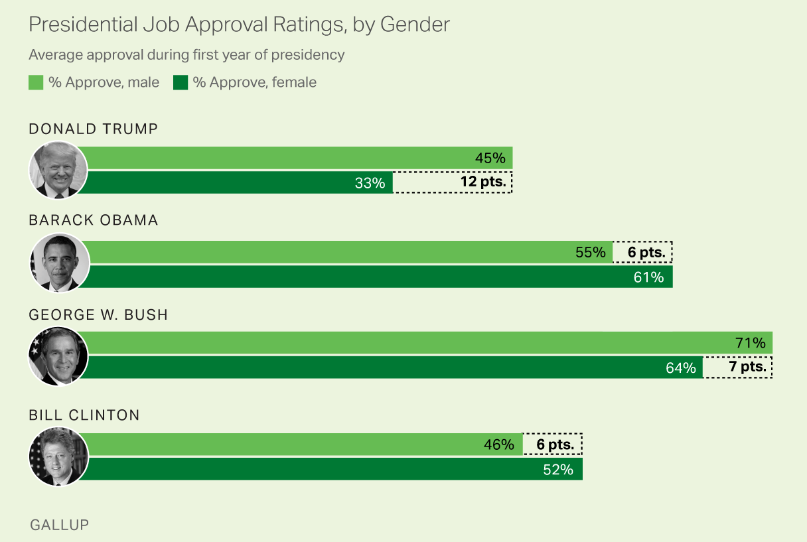

19 Inference about Categorical Data
19.1 Test of Goodness of Fit
Categorical Variable with More Than 2 Categories
- A categorical variable has \(k\) categories \(A_1, \dots, A_k\).
| Subject | \(A_1\) | \(A_2\) | \(\cdots\) | \(\cdots\) | \(A_k\) |
|---|---|---|---|---|---|
| 1 | x | ||||
| 2 | x | ||||
| 3 | x | ||||
| \(\vdots\) | |||||
| \(n\) | x |
With the size \(n\), for categories \(A_1, \dots , A_k\), their observed count is \(O_1, \dots, O_k\), and \(\sum_{i=1}^kO_i = n\).
One-way count table:
| \(A_1\) | \(A_2\) | \(\cdots\) | \(A_k\) | Total |
|---|---|---|---|---|
| \(O_1\) | \(O_2\) | \(\cdots\) | \(O_k\) | \(n\) |
Example
- Are the selected jurors racially representative of the population?
- If the jury is representative of the population, the proportions in the sample should reflect the proportions of the population of eligible jurors (i.e. registered voters).
| White | Black | Hispanic | Asian | |
|---|---|---|---|---|
| Representation in juries | 205 | 26 | 25 | 19 |
| Registered voters | 0.72 | 0.07 | 0.12 | 0.09 |
| White | Black | Hispanic | Asian | |
|---|---|---|---|---|
| Representation in juries | 0.745 | 0.095 | 0.091 | 0.069 |
| Registered voters | 0.72 | 0.07 | 0.12 | 0.09 |
Goodness-of-Fit Test
- A goodness-of-fit test tests the hypothesis that the observed frequency distribution fits or conforms to some claim distribution.
| White | Black | Hispanic | Asian | |
|---|---|---|---|---|
| Registered voters | 0.72 | 0.07 | 0.12 | 0.09 |
- About \(72\%\) of the population is white, so we would expect about \(72\%\) of the jurors to be white.
- \(0.72 \times 275 = 198\).
- We expect about \(7\%\) of the jurors to be black.
- This corresponds to about \(0.07 \times 275 = 19.25\) black jurors.
| White | Black | Hispanic | Asian | |
|---|---|---|---|---|
| Observed Count | 205 | 26 | 25 | 19 |
| Expected Count | 198 | 19.25 | 33 | 24.75 |
| Population Proportion \((H_0)\) | 0.72 | 0.07 | 0.12 | 0.09 |
- The observed count and expected count will be similar if there was no bias in selecting the members of the jury.
- We want to test whether the differences are strong enough to provide convincing evidence that the jurors were not selected from a random sample of all registered voters.
Example
\(\begin{align} &H_0: \text{No racial bias in who serves on a jury, and } \\ &H_1: \text{There is racial bias in juror selection} \end{align}\)
\(\begin{align} &H_0: \pi_1 = \pi_1^0, \pi_2 = \pi_2^0, \dots, \pi_k = \pi_k^0\\ &H_1: \pi_i \ne \pi_i^0 \text{ for some } i \end{align}\)
Under \(H_0\), \(\chi^2_{test} = \frac{(O_1 - E_1)^2}{E_1} + \frac{(O_2 - E_2)^2}{E_2} + \cdots + \frac{(O_k - E_k)^2}{E_k}\), \(E_i = n\pi_i^0, i = 1, \dots, k\)
Reject \(H_0\) if \(\chi^2_{test} > \chi^2_{\alpha, df}\), \(df = k-1\)
Require each \(E_i \ge 5\), \(i = 1, \dots, k\).
| White | Black | Hispanic | Asian | |
|---|---|---|---|---|
| Observed Count | \(O_1 = 205\) | \(O_2 = 26\) | \(O_3 = 25\) | \(O_4 = 19\) |
| Expected Count | \(E_1 = 198\) | \(E_2 = 19.25\) | \(E_3 = 33\) | \(E_4 = 24.75\) |
| Proportion under \(H_0\) | \(\pi_1^0 = 0.72\) | \(\pi_2^0 = 0.07\) | \(\pi_3^0 = 0.12\) | \(\pi_4^0 = 0.09\) |
- Under \(H_0\), \(\chi^2_{test} = \frac{(205 - 198)^2}{198} + \frac{(26 - 19.25)^2}{19.25} + \frac{(25 - 33)^2}{33} + \frac{(19 - 24.75)^2}{24.75} = 5.89\)
- \(\chi^2_{0.05, 3} = 7.81\).
- Because \(5.89 < 7.81\), we fail to reject \(H_0\) in favor of \(H_1\).
- We do not have convincing evidence of racial bias in the juror selection process.
Goodness-of-Fit Test in R
- Below is an example of how to perform a Goodness-of-Fit test in R.
obs <- c(205, 26, 25, 19)
pi_0 <- c(0.72, 0.07, 0.12, 0.09)
## Use chisq.test() function
chisq.test(x = obs, p = pi_0)
Chi-squared test for given probabilities
data: obs
X-squared = 5.8896, df = 3, p-value = 0.117119.2 Test of Independence
Contingency Table and Expected Count
Contingency Table
We have TWO categorical variables, and we want to test whether or not the two variables are independent.
Does the opinion of the President’s job performance depend on gender?
- Job performance: approve, disapprove, no opinion
- Gender: male, female
| Approve | Disapprove | No Opinion | |
|---|---|---|---|
| Male | 18 | 22 | 10 |
| Female | 23 | 20 | 12 |

Expected Count
- Compute the expected count of each cell in the two-way table under the condition that the two variables are independent of each other.
| Approve | Disapprove | No Opinion | |
|---|---|---|---|
| Male | 18 (19.52) | 22 (20) | 10 (10.48) |
| Female | 23 (21.48) | 20 (22) | 12 (11.52) |
| Total | 41 | 42 | 22 |
- The expected count for the \(i\)-th row and \(j\)-th column, which is listed in parentheses in the table above, is: \[\text{Expected Count}_{\text{row i; col j}} = \frac{\text{(row i total}) \times (\text{col j total})}{\text{table total}}\]
Test of Independence Procedure
- Requirements:
- Every \(E_{ij} \ge 5\) in the contingency table.
- \(\begin{align} &H_0: \text{Two variables are independent }\\ &H_1: \text{The two are dependent (associated) } \end{align}\)
- \(\chi^2_{test} = \sum_{i=1}^r\sum_{j=1}^c\frac{(O_{ij} - E_{ij})^2}{E_{ij}}\), where \(r\) is the number of rows and \(c\) is the number of columns in the table.
- Reject \(H_0\) if \(\chi^2_{test} > \chi^2_{\alpha, \, df}\), \(df = (r-1)(c-1)\).
Example
| Approve | Disapprove | No Opinion | |
|---|---|---|---|
| Male | 18 (19.52) | 22 (20) | 10 (10.48) |
| Female | 23 (21.48) | 20 (22) | 12 (11.52) |
| Total | 41 | 42 | 22 |
- \(\begin{align} &H_0: \text{ Opinion does not depend on gender } \\ &H_1: \text{ Opinion and gender are dependent } \end{align}\)
- \(\small \chi^2_{test} = \frac{(18 - 19.52)^2}{19.52} + \frac{(22 - 20)^2}{20} + \frac{(10 - 10.48)^2}{10.48} + \frac{(23 - 21.48)^2}{21.48} + \frac{(20 - 22)^2}{22} + \frac{(12 - 11.52)^2}{11.52}= 0.65\)
- \(\chi^2_{\alpha, df} =\chi^2_{0.05, (2-1)(3-1)} = 5.991\).
- Since \(\chi_{test}^2 < \chi^2_{\alpha, df}\), we do not reject \(H_0\).
- We fail to conclude that the opinion of the President’s job performance depends on gender.
Test of Independence in R
- Below is an example of how to perform the test of independence using R.
[,1] [,2] [,3]
[1,] 18 22 10
[2,] 23 20 12## Using chisq.test() function
(indept_test <- chisq.test(contingency_table))
Pearson's Chi-squared test
data: contingency_table
X-squared = 0.65019, df = 2, p-value = 0.7225qchisq(0.05, df = (2 - 1) * (3 - 1), lower.tail = FALSE) ## critical value[1] 5.99146519.3 Exercises
- A researcher has developed a model for predicting eye color. After examining a random sample of parents, she predicts the eye color of the first child. The table below lists the eye colors of offspring. On the basis of her theory, she predicted that 87% of the offspring would have brown eyes, 8% would have blue eyes, and 5% would have green eyes. Use 0.05 significance level to test the claim that the actual frequencies correspond to her predicted distribution.
| Eye Color | Brown | Blue | Green |
| Frequency | 127 | 21 | 5 |
- In a study of high school students at least 16 years of age, researchers obtained survey results summarized in the accompanying table. Use a 0.05 significance level to test the claim of independence between texting while driving and driving when drinking alcohol. Are these two risky behaviors independent of one another?
| Drove after drinking alcohol? | ||
|---|---|---|
| Yes | No | |
| Texted while driving | 720 | 3027 |
| Did not text while driving | 145 | 4472 |